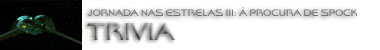

|

STAR TREK III:
THE SEARCH FOR SPOCK
1984


Sinopse
comentada
Comentrios
Citaes
Efeitos
Especiais
Trilha Sonora
Trivia
Ficha
Tcnica
O
DVD
A Morte Tornada
Chance
de Vida

 Nimoy foi convencido a voltar srie e a trazer Spock de volta vida pela oferta da direo do filme (sem "crdito de vaidade", ou seja, sem o crdito "A Film By Leonard Nimoy" aps os crditos iniciais de produo). Nimoy acabou se tornando o primeiro ator da srie a dirigir um segmento de
Jornada, algo que se tornaria bastante comum em anos posteriores na franquia.
Nimoy foi convencido a voltar srie e a trazer Spock de volta vida pela oferta da direo do filme (sem "crdito de vaidade", ou seja, sem o crdito "A Film By Leonard Nimoy" aps os crditos iniciais de produo). Nimoy acabou se tornando o primeiro ator da srie a dirigir um segmento de
Jornada, algo que se tornaria bastante comum em anos posteriores na franquia.
 Robin Curtis foi a primeira atriz (ou ator) de Jornada a assumir um personagem j atuado por outra pessoa (excluindo "trocas de corpos" em histrias de episdios e similares, claro). Personagens como Ishka e Zyial tiveram duas e trs atrizes respectivamente.
Robin Curtis foi a primeira atriz (ou ator) de Jornada a assumir um personagem j atuado por outra pessoa (excluindo "trocas de corpos" em histrias de episdios e similares, claro). Personagens como Ishka e Zyial tiveram duas e trs atrizes respectivamente.
 Os viles do filme seriam originalmente os Romulanos, a nave (ave de rapina) construda, era "teoricamente" Romulana. O estdio pressionou a produo para usar os Klingons, por eles serem mais conhecidos. Usando sempre o argumento da suposta aliana entre estes dois povos (ver
"The Enterprise Incident", da Srie Clssica) a produo justificou internamente tal deciso.
Os viles do filme seriam originalmente os Romulanos, a nave (ave de rapina) construda, era "teoricamente" Romulana. O estdio pressionou a produo para usar os Klingons, por eles serem mais conhecidos. Usando sempre o argumento da suposta aliana entre estes dois povos (ver
"The Enterprise Incident", da Srie Clssica) a produo justificou internamente tal deciso.
 A produo ficou em perigo devido a um grande incndio na Paramount. Reza a lenda que William Shatner ajudou a combater o fogo antes da chegada dos reforos dos bombeiros.
A produo ficou em perigo devido a um grande incndio na Paramount. Reza a lenda que William Shatner ajudou a combater o fogo antes da chegada dos reforos dos bombeiros.
 Os cdigos de autodestruio da Enterprise apresentados no filme so idnticos a aqueles utilizados em
"Let That Be Your Last Battlefield", da Srie Clssica. Todos os cdigos so exibidos no monitor, exceto o "Destruct" final de Kirk.
Os cdigos de autodestruio da Enterprise apresentados no filme so idnticos a aqueles utilizados em
"Let That Be Your Last Battlefield", da Srie Clssica. Todos os cdigos so exibidos no monitor, exceto o "Destruct" final de Kirk.
 O comeo do filme (cerca de cinco minutos e meio) retirado do final do filme anterior (outras bvias economias acontecem quando Kruge assiste ao relatrio sobre Genesis apresentado por Kirk e em toda a seqncia em que Kirk e Sarek tentam descobrir quem recebeu o Katra de Spock, tambm contedo extrado de
"A Ira de Khan"). O grosso desse material constitudo por cenas aparentemente no dirigidas por Nicholas Meyer.
O comeo do filme (cerca de cinco minutos e meio) retirado do final do filme anterior (outras bvias economias acontecem quando Kruge assiste ao relatrio sobre Genesis apresentado por Kirk e em toda a seqncia em que Kirk e Sarek tentam descobrir quem recebeu o Katra de Spock, tambm contedo extrado de
"A Ira de Khan"). O grosso desse material constitudo por cenas aparentemente no dirigidas por Nicholas Meyer.
 Os pingos (tribbles) fazem uma apario na cena no bar em que McCoy tenta encontrar uma nave para chegar a Genesis.
Os pingos (tribbles) fazem uma apario na cena no bar em que McCoy tenta encontrar uma nave para chegar a Genesis.
 A Enterprise era para ser completamente destruda aps o procedimento de autodestruio, com Kirk e cia. observando apenas (relativamente) pequenos fragmentos se queimando na atmosfera. Bennett insistiu na mudana vista em tela, que ele considerou muito mais dramtica, em que somente o disco explode e o casco secundrio ainda pode ser bem reconhecido medida que o que restou da nave deixa um rastro de fogo sobre Genesis. Curiosamente, num primeiro instante a nave parece realmente explodir por completo.
A Enterprise era para ser completamente destruda aps o procedimento de autodestruio, com Kirk e cia. observando apenas (relativamente) pequenos fragmentos se queimando na atmosfera. Bennett insistiu na mudana vista em tela, que ele considerou muito mais dramtica, em que somente o disco explode e o casco secundrio ainda pode ser bem reconhecido medida que o que restou da nave deixa um rastro de fogo sobre Genesis. Curiosamente, num primeiro instante a nave parece realmente explodir por completo.
 A ponte da USS Grisson simplesmente a ponte da USS Enterprise arrumada com poltronas de cor de rosa e o "bar" que McCoy visita no filme simplesmente a enfermaria da Enterprise com alguma maquiagem.
A ponte da USS Grisson simplesmente a ponte da USS Enterprise arrumada com poltronas de cor de rosa e o "bar" que McCoy visita no filme simplesmente a enfermaria da Enterprise com alguma maquiagem.
 A reao de Kirk morte de David foi totalmente improvisada por Shatner, por indicao do diretor Nimoy. Entretanto, ningum sabe at hoje se ele errou a poltrona de capito intencionalmente ou no.
A reao de Kirk morte de David foi totalmente improvisada por Shatner, por indicao do diretor Nimoy. Entretanto, ningum sabe at hoje se ele errou a poltrona de capito intencionalmente ou no.
 largamente aceito que a fala do almirante Morrow, de que "a Enterprise j completou vinte anos", se refere a uma suposta reforma que a nave sofreu imediatamente antes de Kirk assumir o comando deixado vago por Pike. Examinemos alguns fatos e especulaes bastante slidas que ajudam nessa questo. Em 2245 (especulao baseada em uma sugesto de Gene Roddenberry de que a Enterprise teria cerca de 20 anos de idade em
"Where No Man Has Gone
Before") lanada a nave estelar Enterprise NCC-1701 (especulao: sob o comando do capito Robert April em uma misso de cinco anos, sendo lanada dos estaleiros de So Francisco, em rbita da Terra), sendo um dos seus projetistas um jovem engenheiro de nome Laurence Marvik (ver
"Is There In Truth No Beauty?"). Em 2254, j sob o comando de Christopher Pike (especulao: Pike teria comandado a nave aproximadamente entre 2251 e 2261), a Enterprise visita Talos IV pela primeira vez (como visto em
"The Cage"). Teramos um perodo ento entre (aproximadamente) 2161 e 2164 em que a nave passaria por uma grande reforma para s ento ser assumida por Kirk (tal reforma tambm uma especulao). A partir desta reforma que seriam contados os "vinte anos" referidos pelo almirante. O filme
" Procura de Spock" se passa em 2285 e sem esta racionalizao aqui apresentada a fala do almirante uma bvia contradio ao episdio
"The Menagerie".
largamente aceito que a fala do almirante Morrow, de que "a Enterprise j completou vinte anos", se refere a uma suposta reforma que a nave sofreu imediatamente antes de Kirk assumir o comando deixado vago por Pike. Examinemos alguns fatos e especulaes bastante slidas que ajudam nessa questo. Em 2245 (especulao baseada em uma sugesto de Gene Roddenberry de que a Enterprise teria cerca de 20 anos de idade em
"Where No Man Has Gone
Before") lanada a nave estelar Enterprise NCC-1701 (especulao: sob o comando do capito Robert April em uma misso de cinco anos, sendo lanada dos estaleiros de So Francisco, em rbita da Terra), sendo um dos seus projetistas um jovem engenheiro de nome Laurence Marvik (ver
"Is There In Truth No Beauty?"). Em 2254, j sob o comando de Christopher Pike (especulao: Pike teria comandado a nave aproximadamente entre 2251 e 2261), a Enterprise visita Talos IV pela primeira vez (como visto em
"The Cage"). Teramos um perodo ento entre (aproximadamente) 2161 e 2164 em que a nave passaria por uma grande reforma para s ento ser assumida por Kirk (tal reforma tambm uma especulao). A partir desta reforma que seriam contados os "vinte anos" referidos pelo almirante. O filme
" Procura de Spock" se passa em 2285 e sem esta racionalizao aqui apresentada a fala do almirante uma bvia contradio ao episdio
"The Menagerie".
 Os modelos da nave de carga de Valkris, da ave de rapina Klingon, da Doca Espacial e da Excelsior foram usados at a exausto em posteriores segmentos de
Jornada nas Estrelas. As precrias condies do mundo real do modelo da classe Ambassador usado em
"Yesterday's Enterprise" (clssico episdio da terceira temporada de
A Nova Gerao) deixaram implcito canonicamente ao longo do tempo na franquia que as naves da classe Excelsior (a mesma que a Enterprise-B) tiveram uma vida til muito, muito maior do que as Ambassador (classe da Enterprise-C).
Os modelos da nave de carga de Valkris, da ave de rapina Klingon, da Doca Espacial e da Excelsior foram usados at a exausto em posteriores segmentos de
Jornada nas Estrelas. As precrias condies do mundo real do modelo da classe Ambassador usado em
"Yesterday's Enterprise" (clssico episdio da terceira temporada de
A Nova Gerao) deixaram implcito canonicamente ao longo do tempo na franquia que as naves da classe Excelsior (a mesma que a Enterprise-B) tiveram uma vida til muito, muito maior do que as Ambassador (classe da Enterprise-C).
 Diversos elementos deste filme foram inspirados em "The
Menagerie", da Srie Clssica. Um amigo querendo dar uma melhor chance de vida a um outro com que serviu anos a fio; o roubo da Enterprise; um planeta proibido e a mente aprisionada de um personagem.
Diversos elementos deste filme foram inspirados em "The
Menagerie", da Srie Clssica. Um amigo querendo dar uma melhor chance de vida a um outro com que serviu anos a fio; o roubo da Enterprise; um planeta proibido e a mente aprisionada de um personagem.
 Outra questo polmica a questo de "transdobra", que devido a uma infeliz escolha do nome original e a uma ainda mais infeliz traduo em portugus ("que rompe a barreira da dobra espacial"), parecem indicar algo alm da dobra 10 (limite fsico do universo de Jornada) na escala introduzida em
A Nova Gerao (que o verdadeiro princpio a ser seguido). O que no verdade. Tal termo simplesmente indica uma tentativa de se aproximar mais de tal limite fsico do que o melhor resultado vigente na poca. O termo usado por diversas vezes em
Jornada e essa interpretao a mais consistente. O "Quantum Sliptream Drive" (grosseiramente "Motor de Deslizamento Quntico", visto em
"Timeless", da srie Voyager) somente um outro tipo de propulso mais rpida que a luz com aspiraes de "transdobra", segundo a conveno desse pargrafo, e a terminologia (errada) j usada em
Jornada.
Outra questo polmica a questo de "transdobra", que devido a uma infeliz escolha do nome original e a uma ainda mais infeliz traduo em portugus ("que rompe a barreira da dobra espacial"), parecem indicar algo alm da dobra 10 (limite fsico do universo de Jornada) na escala introduzida em
A Nova Gerao (que o verdadeiro princpio a ser seguido). O que no verdade. Tal termo simplesmente indica uma tentativa de se aproximar mais de tal limite fsico do que o melhor resultado vigente na poca. O termo usado por diversas vezes em
Jornada e essa interpretao a mais consistente. O "Quantum Sliptream Drive" (grosseiramente "Motor de Deslizamento Quntico", visto em
"Timeless", da srie Voyager) somente um outro tipo de propulso mais rpida que a luz com aspiraes de "transdobra", segundo a conveno desse pargrafo, e a terminologia (errada) j usada em
Jornada.
 Fazendo uma analogia com escoamentos de fluidos em alta velocidade, ns teramos: velocidade de subdobra (ou sub-luminal) para velocidades inferiores a dobra um, velocidades de dobra (ou luminal) para velocidades exatamente iguais a dobra um (velocidade da luz), velocidade de super-dobra (ou super-luminal) para velocidades superiores a dobra um e velocidade de hiperdobra (ou hiper-luminal) para aquelas que se aproximam do limite fsico da dobra 10. Transdobra seria algo na vizinhana de dobra um (que seria a verdadeira "barreira da dobra"). Da o erro de nomenclatura. A primeira classificao ou desviada com a terminologia "de impulso" ou o termo "sub-luz" usado. As classificaes seguintes so tratadas conjuntamente como "velocidade de dobra" em
Jornada. Entretanto, a ltima classificao tem algum reconhecimento, com termos como "High Warp" (ou "Alta Dobra"). Ou seja, na realidade este "transdobra" de
Jornada deveria se chamar "hiperdobra" para aproximar o nome ao real significado.
Fazendo uma analogia com escoamentos de fluidos em alta velocidade, ns teramos: velocidade de subdobra (ou sub-luminal) para velocidades inferiores a dobra um, velocidades de dobra (ou luminal) para velocidades exatamente iguais a dobra um (velocidade da luz), velocidade de super-dobra (ou super-luminal) para velocidades superiores a dobra um e velocidade de hiperdobra (ou hiper-luminal) para aquelas que se aproximam do limite fsico da dobra 10. Transdobra seria algo na vizinhana de dobra um (que seria a verdadeira "barreira da dobra"). Da o erro de nomenclatura. A primeira classificao ou desviada com a terminologia "de impulso" ou o termo "sub-luz" usado. As classificaes seguintes so tratadas conjuntamente como "velocidade de dobra" em
Jornada. Entretanto, a ltima classificao tem algum reconhecimento, com termos como "High Warp" (ou "Alta Dobra"). Ou seja, na realidade este "transdobra" de
Jornada deveria se chamar "hiperdobra" para aproximar o nome ao real significado.
 Judi M. Durand fez a voz do computador Cardassiano da estao em Deep Space
Nine. Na cena em que Scott vai terminando o seu turno de trabalho na Excelsior, pode-se ouvir Leonard Nimoy como a voz do computador daquela nave.
Judi M. Durand fez a voz do computador Cardassiano da estao em Deep Space
Nine. Na cena em que Scott vai terminando o seu turno de trabalho na Excelsior, pode-se ouvir Leonard Nimoy como a voz do computador daquela nave.
 O filme foi indicado ao prmio Hugo de fico cientfica como "Melhor apresentao dramtica" em 1985.
O filme foi indicado ao prmio Hugo de fico cientfica como "Melhor apresentao dramtica" em 1985.
 Christopher Lloyd (nascido a 22 de outubro de 1938 em Stamford, Connecticut, EUA) fez carreira interpretando personagens definitivamente excntricos e por vezes perigosos. Sua estria na grande tela foi no clssico americano "One Flew Over the Cuckoo's Nest" (1975) (onde contracenou com Louise Fletcher e Brad Dourif, que mais tarde trabalhariam em
Jornada como Kai Winn em Deep Space Nine e Lon Suder em Voyager, respectivamente), como um enervante paciente mental. Aps isso a sua carreira cinematogrfica perdeu um pouco de fora em um perodo que incluiu como destaque a sua participao no filme "The Onion Field" (1979). O papel do reverendo Jim Ignatowski na srie "Taxi" (que lhe rendeu dois prmios Emmy como ator coadjuvante em uma srie de comdia em 1983 e 1984) elevou a sua popularidade, levando-o ao papel do Klingon Kruge e finalmente ao de seu personagem mais popular. O doutor "Doc" Brown de "Back to the Future" (1985) (e de suas duas seqncias "Back to the Future Part II" de 1989 e "Back to the Future Part III" de 1990) lhe rendeu fama e reconhecimento dentro do gnero, tendo o efeito colateral (no necessariamente bem vindo) de lhe conseguir vrios papis de "cientistas loucos" (ou similares) logo em seguida. Tambm bem conhecido por seu papel como "tio Fester" em "The Addams Family" (1991) e sua continuao "Addams Family Values" (1993) e ganhou um outro prmio Emmy, agora como ator convidado de drama, por "Road To Avonlea" em 1992. Participou ainda de filmes como "Who Framed Roger Rabbit" (1988), "Man on the Moon" (1999) (curiosamente como o reverendo Jim e como ele prprio, uma vez que parte do filme se passava na produo da srie "Taxi" -- Detalhe: um filme do mesmo Milos Forman, que dirigiu o primeiro filme do ator na telona) e do telefilme "Wit" (2001).
Christopher Lloyd (nascido a 22 de outubro de 1938 em Stamford, Connecticut, EUA) fez carreira interpretando personagens definitivamente excntricos e por vezes perigosos. Sua estria na grande tela foi no clssico americano "One Flew Over the Cuckoo's Nest" (1975) (onde contracenou com Louise Fletcher e Brad Dourif, que mais tarde trabalhariam em
Jornada como Kai Winn em Deep Space Nine e Lon Suder em Voyager, respectivamente), como um enervante paciente mental. Aps isso a sua carreira cinematogrfica perdeu um pouco de fora em um perodo que incluiu como destaque a sua participao no filme "The Onion Field" (1979). O papel do reverendo Jim Ignatowski na srie "Taxi" (que lhe rendeu dois prmios Emmy como ator coadjuvante em uma srie de comdia em 1983 e 1984) elevou a sua popularidade, levando-o ao papel do Klingon Kruge e finalmente ao de seu personagem mais popular. O doutor "Doc" Brown de "Back to the Future" (1985) (e de suas duas seqncias "Back to the Future Part II" de 1989 e "Back to the Future Part III" de 1990) lhe rendeu fama e reconhecimento dentro do gnero, tendo o efeito colateral (no necessariamente bem vindo) de lhe conseguir vrios papis de "cientistas loucos" (ou similares) logo em seguida. Tambm bem conhecido por seu papel como "tio Fester" em "The Addams Family" (1991) e sua continuao "Addams Family Values" (1993) e ganhou um outro prmio Emmy, agora como ator convidado de drama, por "Road To Avonlea" em 1992. Participou ainda de filmes como "Who Framed Roger Rabbit" (1988), "Man on the Moon" (1999) (curiosamente como o reverendo Jim e como ele prprio, uma vez que parte do filme se passava na produo da srie "Taxi" -- Detalhe: um filme do mesmo Milos Forman, que dirigiu o primeiro filme do ator na telona) e do telefilme "Wit" (2001).
 Judith Anderson (nascida Frances Margaret Anderson-Anderson a 10 de fevereiro de 1897 em Adelaide, South Australia, Austrlia e falecida a trs de janeiro de 1992 em Santa Brbara, Califrnia, EUA, devido a complicaes decorrentes de uma pneumonia) teve em T'Lar um dos seus ltimos trabalhos profissionais. Uma excepcional atriz de teatro que falhou em duplicar o seu sucesso dos palcos em Hollywood. Chegando Amrica (vinda da Austrlia) em 1918, estabeleceu rapidamente uma grande reputao no teatro de Nova York (suas performances, em montagens de 1937 e 1941 como "Lady McBeth", so quase legendrias no meio). Foi indicada ao Oscar de atriz coadjuvante em 1941, por "Rebbeca", brilhante estria do diretor ingls Alfred Hitchcock em Hollywood. Ganhou dois Emmys por duas montagens diferentes de MacBeth (definitivamente a personagem que marcou a sua carreira) para a TV e ainda recebeu mais trs indicaes ao mesmo prmio por outros papis. Alm dos clssicos filmes "Rebbeca" (1940) e "Laura" (1944) (de Otto Preminger), participou ainda de "Cat on a Hot Tin Roof" (1958), "The Ten Commandments" (1956) e muitos outros. Ganhou o ttulo de "Dame" em 1959.
Judith Anderson (nascida Frances Margaret Anderson-Anderson a 10 de fevereiro de 1897 em Adelaide, South Australia, Austrlia e falecida a trs de janeiro de 1992 em Santa Brbara, Califrnia, EUA, devido a complicaes decorrentes de uma pneumonia) teve em T'Lar um dos seus ltimos trabalhos profissionais. Uma excepcional atriz de teatro que falhou em duplicar o seu sucesso dos palcos em Hollywood. Chegando Amrica (vinda da Austrlia) em 1918, estabeleceu rapidamente uma grande reputao no teatro de Nova York (suas performances, em montagens de 1937 e 1941 como "Lady McBeth", so quase legendrias no meio). Foi indicada ao Oscar de atriz coadjuvante em 1941, por "Rebbeca", brilhante estria do diretor ingls Alfred Hitchcock em Hollywood. Ganhou dois Emmys por duas montagens diferentes de MacBeth (definitivamente a personagem que marcou a sua carreira) para a TV e ainda recebeu mais trs indicaes ao mesmo prmio por outros papis. Alm dos clssicos filmes "Rebbeca" (1940) e "Laura" (1944) (de Otto Preminger), participou ainda de "Cat on a Hot Tin Roof" (1958), "The Ten Commandments" (1956) e muitos outros. Ganhou o ttulo de "Dame" em 1959.
 Robin Curtis (nascida a 15 de junho de 1956 em New York Mills, Nova York, nos EUA) possui uma carreira sem grandes destaques (sua participao em dois filmes de
Jornada o ponto alto desta). Voltaria a aparecer como Saavik no filme seguinte
("Jornada nas Estrelas IV: A Volta Para Casa") de Jornada e mais tarde no duplo
"Gambit", da ltima temporada de A Nova Gerao, como Tallera e T'Paal (dupla identidade). Tambm participou da primeira temporada de "Babylon 5" no episdio "Deathwalker", de 1994, como a embaixadora Kalika.
Robin Curtis (nascida a 15 de junho de 1956 em New York Mills, Nova York, nos EUA) possui uma carreira sem grandes destaques (sua participao em dois filmes de
Jornada o ponto alto desta). Voltaria a aparecer como Saavik no filme seguinte
("Jornada nas Estrelas IV: A Volta Para Casa") de Jornada e mais tarde no duplo
"Gambit", da ltima temporada de A Nova Gerao, como Tallera e T'Paal (dupla identidade). Tambm participou da primeira temporada de "Babylon 5" no episdio "Deathwalker", de 1994, como a embaixadora Kalika.
 Phil Morris (nascido a 4 de abril de 1959 em Iowa City, Iowa, EUA) um verdadeiro patrimnio da histria de Jornada, tendo iniciado suas participaes especiais com apenas sete anos, como o "garoto negro com um capacete do exrcito" em
"Miri" (da primeira temporada da
Srie Clssica) em 1966. De l para c, fez o cadete Foster (que pergunta a Kirk logo no incio do filme se haver uma recepo para eles) no (seu primeiro) filme
"Jornada nas Estrelas III: Procura de Spock" em 1984. Ele fez ainda o Klingon Thopok em
"Looking for Par'Mach in All the Wrong Places" (da quinta temporada de
DS9, em 1996), o inesquecvel Jem'Hadar Remata'Klan em "Rocks and Shoals" (da sexta temporada de
DS9, em 1997) e o tenente John Kelly em "One Small Step" (da sexta temporada de
Voyager, em 1999). Phil Morris filho de Greg Morris, ator da verso original da srie "Mission: Impossible", tambm produzida pela Desilu/Paramount ao mesmo tempo em que a
Srie Clssica de Jornada. Numa de suas muitas visitas ao estdio foi que nasceu a sua participao em
"Miri". Em 1988, ele participou de uma nova verso de "Mission: Impossible" na mesma funo que fora outrora de seu pai e mais, seu personagem tambm era filho do personagem do seu pai (com direito at a um episdio especial envolvendo os dois). Phil Morris tentou tambm o papel de Ben Sisko e participou do clssico absoluto "Severed Dreams", da terceira temporada de "Babylon 5", em 1996 (como o personagem "Bill Trainor"). Seu filme mais popular provavelmente "Wag The Dog" (1997).
Phil Morris (nascido a 4 de abril de 1959 em Iowa City, Iowa, EUA) um verdadeiro patrimnio da histria de Jornada, tendo iniciado suas participaes especiais com apenas sete anos, como o "garoto negro com um capacete do exrcito" em
"Miri" (da primeira temporada da
Srie Clssica) em 1966. De l para c, fez o cadete Foster (que pergunta a Kirk logo no incio do filme se haver uma recepo para eles) no (seu primeiro) filme
"Jornada nas Estrelas III: Procura de Spock" em 1984. Ele fez ainda o Klingon Thopok em
"Looking for Par'Mach in All the Wrong Places" (da quinta temporada de
DS9, em 1996), o inesquecvel Jem'Hadar Remata'Klan em "Rocks and Shoals" (da sexta temporada de
DS9, em 1997) e o tenente John Kelly em "One Small Step" (da sexta temporada de
Voyager, em 1999). Phil Morris filho de Greg Morris, ator da verso original da srie "Mission: Impossible", tambm produzida pela Desilu/Paramount ao mesmo tempo em que a
Srie Clssica de Jornada. Numa de suas muitas visitas ao estdio foi que nasceu a sua participao em
"Miri". Em 1988, ele participou de uma nova verso de "Mission: Impossible" na mesma funo que fora outrora de seu pai e mais, seu personagem tambm era filho do personagem do seu pai (com direito at a um episdio especial envolvendo os dois). Phil Morris tentou tambm o papel de Ben Sisko e participou do clssico absoluto "Severed Dreams", da terceira temporada de "Babylon 5", em 1996 (como o personagem "Bill Trainor"). Seu filme mais popular provavelmente "Wag The Dog" (1997).
 John Bernard Larroquette (nascido a 25 de novembro de 1947 em New Orleans, Louisiana, EUA) um alcolatra recuperado e desenvolveu uma dico bastante refinada para poder trabalhar em rdio. Aps ganhar o Emmy de "ator coadjuvante em srie cmica" por quatro vezes em seguida (de 1985 a 1988) pela srie "Night Court" (foi indicado a um Globo de Ouro pelo mesmo papel, na mesma srie, tambm), Larroquette pediu produo da srie que seu trabalho neste papel no fosse mais submetido para a considerao da Academia de Artes e Cincias Televisivas (que oferta os Emmys). Mais tarde recebeu uma indicao ao Emmy pelo seu prprio "The John Larroquette Show", em 1994. Com o inesquecvel papel (vagamente) recorrente de "Joey Heric" na srie "The Practice", ele ganhou um Emmy em 1998 e foi novamente indicado em 2002.
John Bernard Larroquette (nascido a 25 de novembro de 1947 em New Orleans, Louisiana, EUA) um alcolatra recuperado e desenvolveu uma dico bastante refinada para poder trabalhar em rdio. Aps ganhar o Emmy de "ator coadjuvante em srie cmica" por quatro vezes em seguida (de 1985 a 1988) pela srie "Night Court" (foi indicado a um Globo de Ouro pelo mesmo papel, na mesma srie, tambm), Larroquette pediu produo da srie que seu trabalho neste papel no fosse mais submetido para a considerao da Academia de Artes e Cincias Televisivas (que oferta os Emmys). Mais tarde recebeu uma indicao ao Emmy pelo seu prprio "The John Larroquette Show", em 1994. Com o inesquecvel papel (vagamente) recorrente de "Joey Heric" na srie "The Practice", ele ganhou um Emmy em 1998 e foi novamente indicado em 2002.
 James Barrie Sikking (nascido a 5 de maro de 1934 em Los Angeles, Califrnia, EUA) fez sua carreira como ator de TV. Seu personagem mais marcante foi o do tenente Howard Hunter da lendria srie policial "Hill Street Blues" (1981) (base para todo o drama televisivo norte-americano desde ento), srie pela qual recebeu uma indicao ao prmio Emmy em 1984. Tem vrias participaes especiais no gnero Sci-Fi, em sries como "The Outer Limits" (a verso original de 1963), "My Favorite Martian", "The Invaders", "Mission: Impossible", "Night Gallery", "The Bionic Woman", "The Incredible Hulk" etc. Sua participao mais popular no cinema foi em "Ordinary People" de 1980.
James Barrie Sikking (nascido a 5 de maro de 1934 em Los Angeles, Califrnia, EUA) fez sua carreira como ator de TV. Seu personagem mais marcante foi o do tenente Howard Hunter da lendria srie policial "Hill Street Blues" (1981) (base para todo o drama televisivo norte-americano desde ento), srie pela qual recebeu uma indicao ao prmio Emmy em 1984. Tem vrias participaes especiais no gnero Sci-Fi, em sries como "The Outer Limits" (a verso original de 1963), "My Favorite Martian", "The Invaders", "Mission: Impossible", "Night Gallery", "The Bionic Woman", "The Incredible Hulk" etc. Sua participao mais popular no cinema foi em "Ordinary People" de 1980.